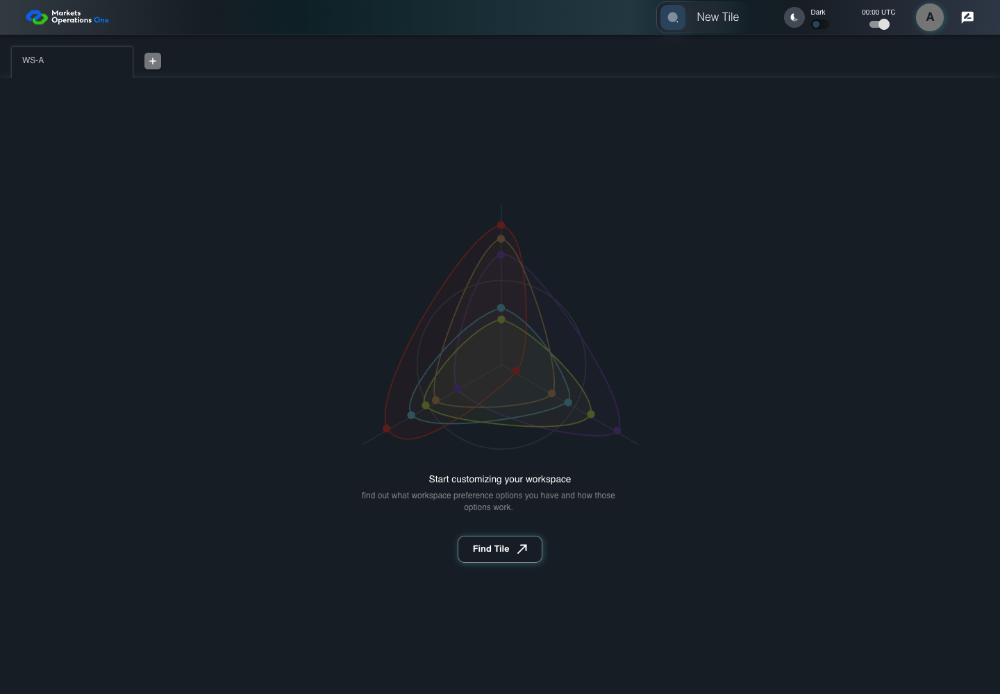

All canonical cases
AUTH-062: Acquire with a newer access credential Business acceptance remains unverified. Owner: unknown. Review the canonical definition and fixture limits before acceptance.
Latest local result: PASS Business acceptance: NOT_ESTABLISHED.
The latest local result describes execution. The historical definition review assesses the case design before execution.
Latest step screenshot evidence: COMPLETE . 13/13 canonical steps have execution screenshots.
Canonical Gherkin definition . Definition version: 2. SHA-256: 129f0f8bdd1e1a24c257c17f51d330e40becb0839ae80214d8bf6e2bf2346bf2.
Historical definition review (preflight): UNVERIFIED A definition review FAIL can coexist with local PASS. The definition failed preflight quality checks.
This historical review does not change the latest execution result. Resolve definition gaps before business acceptance.
Canonical Gherkin steps Feature: Refresh
@AUTH-062
Scenario: Acquire with a newer access credential
Given User A is authenticated as user-a in an isolated browser context
And the selected fixture tab is labelled "WS-A" inside the tablist named "workspaces" on the Home page
And access A expires at controlled time T+900 seconds; no refresh credential exists
And acquisition for access A is pending; accepted extension installs access B
And the browser is visible; request counts restart after access B is installed
When the browser changes this page from visible to hidden
Then the access-A acquisition AbortSignal is aborted
And the browser records exactly 1 new POST requests to "/api/auth/v2/sso/refreshtoken"
And the new acquisition POST body has singleUIAuthorization equal to access B
When the fixture accepts the access-B acquisition
And the browser changes this page from hidden to visible
Then the tab labelled "WS-A" inside the tablist named "workspaces" on the Home page is visible
And the installed access credential remains access B Acceptance and evidence limits: NO_COMPLETE_REAL_APPLICATION_BINDING, CANONICAL_REVIEW_OR_EVIDENCE_UNRESOLVED.
Planned essential canonical frames: 2. Plan completeness requires separate review.
Latest attempt AUTH-062 access acquisition race PASS · application/run-050/auth-062-access-acquisition-race-a0bf076df3ed-attempt-1 · ACTUAL_APPLICATION_LOCAL_SERVICES
Actual MFE with controlled HTTP responses, clock, visibility and popup boundary. Browser-only unsigned credentials. No real provider or server security acceptance.
2026-10-22T06:04:22.335Z to 2026-10-22T06:04:26.345Z
Assertions and result · Artifact manifest · Exact run inputs and source hashes
Result SHA-256: c28897e345db21beac2d5463815454728e009b89424aeeddaf6074023abd6b06 Playwright trace
Machine observations Screenshot capture: CAPTURED. Named frames: 14.
Step screenshot evidence: COMPLETE. 13/13 canonical steps have execution screenshots.
Canonical step timeline Given User A is authenticated as user-a in an isolated browser context
1. step-01 Visible state after step 1: Given User A is authenticated as user-a in an isolated browser context
2026-10-22T06:04:24.901Z · 1440×10000712c3f55455954e6d35b836023a1f2355851f08e119e269da9cda84dc0bcfd4 And the selected fixture tab is labelled "WS-A" inside the tablist named "workspaces" on the Home page
2. step-02 Visible state after step 2: And the selected fixture tab is labelled "WS-A" inside the tablist named "workspaces" on the Home page
2026-10-22T06:04:24.975Z · 1440×10000712c3f55455954e6d35b836023a1f2355851f08e119e269da9cda84dc0bcfd4 And access A expires at controlled time T+900 seconds; no refresh credential exists
3. step-03 Visible state after step 3: And access A expires at controlled time T+900 seconds; no refresh credential exists
2026-10-22T06:04:25.057Z · 1440×10000712c3f55455954e6d35b836023a1f2355851f08e119e269da9cda84dc0bcfd4 And acquisition for access A is pending; accepted extension installs access B
4. step-04 Visible state after step 4: And acquisition for access A is pending; accepted extension installs access B
2026-10-22T06:04:25.289Z · 1440×100076ef0b1f5dee78b5f7152692defb63f1084b88907a9723b1f203df5738246d67 And the browser is visible; request counts restart after access B is installed
5. step-05 Visible state after step 5: And the browser is visible; request counts restart after access B is installed
2026-10-22T06:04:25.357Z · 1440×100076ef0b1f5dee78b5f7152692defb63f1084b88907a9723b1f203df5738246d67 When the browser changes this page from visible to hidden
6. step-06 Visible state after step 6: When the browser changes this page from visible to hidden
2026-10-22T06:04:25.457Z · 1440×10002e790585d1cb245dc34bc95daa5148fe25be0641481ec8c14da6aa99d05c5dc2 Then the access-A acquisition AbortSignal is aborted
7. step-07 Visible state after step 7: Then the access-A acquisition AbortSignal is aborted
2026-10-22T06:04:25.540Z · 1440×10002e790585d1cb245dc34bc95daa5148fe25be0641481ec8c14da6aa99d05c5dc2 And the browser records exactly 1 new POST requests to "/api/auth/v2/sso/refreshtoken"
8. step-08 Visible state after step 8: And the browser records exactly 1 new POST requests to "/api/auth/v2/sso/refreshtoken"
2026-10-22T06:04:25.616Z · 1440×10002e790585d1cb245dc34bc95daa5148fe25be0641481ec8c14da6aa99d05c5dc2 And the new acquisition POST body has singleUIAuthorization equal to access B
9. step-09 Visible state after step 9: And the new acquisition POST body has singleUIAuthorization equal to access B
2026-10-22T06:04:25.692Z · 1440×10002e790585d1cb245dc34bc95daa5148fe25be0641481ec8c14da6aa99d05c5dc2 When the fixture accepts the access-B acquisition
10. step-10 Visible state after step 10: When the fixture accepts the access-B acquisition
2026-10-22T06:04:25.773Z · 1440×10002e790585d1cb245dc34bc95daa5148fe25be0641481ec8c14da6aa99d05c5dc2 And the browser changes this page from hidden to visible
11. step-11 Visible state after step 11: And the browser changes this page from hidden to visible
2026-10-22T06:04:25.843Z · 1440×10002e790585d1cb245dc34bc95daa5148fe25be0641481ec8c14da6aa99d05c5dc2 Then the tab labelled "WS-A" inside the tablist named "workspaces" on the Home page is visible
12. step-12 Visible state after step 12: Then the tab labelled "WS-A" inside the tablist named "workspaces" on the Home page is visible
2026-10-22T06:04:25.921Z · 1440×10002e790585d1cb245dc34bc95daa5148fe25be0641481ec8c14da6aa99d05c5dc2 And the installed access credential remains access B

13. step-13 Visible state after step 13: And the installed access credential remains access B
2026-10-22T06:04:26.007Z · 1440×10002e790585d1cb245dc34bc95daa5148fe25be0641481ec8c14da6aa99d05c5dc2 Additional named frames 14. final-result The final visible state after the named test assertions.
2026-10-22T06:04:26.158Z · 1440×10002e790585d1cb245dc34bc95daa5148fe25be0641481ec8c14da6aa99d05c5dc2 Screenshots establish visible state only. Assertions and traces support functional claims.
Earlier attempt history (1) Earlier attempt PASS (superseded by latest PASS) AUTH-062 access acquisition race PASS · application/run-042/auth-062-access-acquisition-race-a0bf076df3ed-attempt-1 · ACTUAL_APPLICATION_LOCAL_SERVICES
Actual MFE with controlled HTTP responses, clock, visibility and popup boundary. Browser-only unsigned credentials. No real provider or server security acceptance.
2026-10-22T05:46:16.741Z to 2026-10-22T05:46:18.201Z
Assertions and result · Artifact manifest · Exact run inputs and source hashes
Result SHA-256: 5baf807214dfddd71e1e87ab182d0d5ab8ae4f266d16b5de1860f5476ce327e4 Playwright trace
Machine observations Screenshot capture: CAPTURED. Named frames: 14.
Step screenshot evidence: COMPLETE. 13/13 canonical steps have execution screenshots.
Canonical step timeline Given User A is authenticated as user-a in an isolated browser context
1. step-01 Visible state after step 1: Given User A is authenticated as user-a in an isolated browser context
2026-10-22T05:46:17.549Z · 1440×1000173819b107f9721ddd580be6e85c728fb50ae34f4f23504c76db9e83104ff541 And the selected fixture tab is labelled "WS-A" inside the tablist named "workspaces" on the Home page
2. step-02 Visible state after step 2: And the selected fixture tab is labelled "WS-A" inside the tablist named "workspaces" on the Home page
2026-10-22T05:46:17.593Z · 1440×1000173819b107f9721ddd580be6e85c728fb50ae34f4f23504c76db9e83104ff541 And access A expires at controlled time T+900 seconds; no refresh credential exists
3. step-03 Visible state after step 3: And access A expires at controlled time T+900 seconds; no refresh credential exists
2026-10-22T05:46:17.623Z · 1440×1000173819b107f9721ddd580be6e85c728fb50ae34f4f23504c76db9e83104ff541 And acquisition for access A is pending; accepted extension installs access B
4. step-04 Visible state after step 4: And acquisition for access A is pending; accepted extension installs access B
2026-10-22T05:46:17.777Z · 1440×10003b11288d42dbeaf1945c96ad8f64a96f628eacc3be367f33d98299dc2c1f6988 And the browser is visible; request counts restart after access B is installed
5. step-05 Visible state after step 5: And the browser is visible; request counts restart after access B is installed
2026-10-22T05:46:17.807Z · 1440×10003b11288d42dbeaf1945c96ad8f64a96f628eacc3be367f33d98299dc2c1f6988 When the browser changes this page from visible to hidden
6. step-06 Visible state after step 6: When the browser changes this page from visible to hidden
2026-10-22T05:46:17.839Z · 1440×100018ed33466d8879970f9f619cedf651b364ab51bce6b31d7632e4b942b8140b93 Then the access-A acquisition AbortSignal is aborted
7. step-07 Visible state after step 7: Then the access-A acquisition AbortSignal is aborted
2026-10-22T05:46:17.871Z · 1440×100018ed33466d8879970f9f619cedf651b364ab51bce6b31d7632e4b942b8140b93 And the browser records exactly 1 new POST requests to "/api/auth/v2/sso/refreshtoken"
8. step-08 Visible state after step 8: And the browser records exactly 1 new POST requests to "/api/auth/v2/sso/refreshtoken"
2026-10-22T05:46:17.905Z · 1440×100018ed33466d8879970f9f619cedf651b364ab51bce6b31d7632e4b942b8140b93 And the new acquisition POST body has singleUIAuthorization equal to access B
9. step-09 Visible state after step 9: And the new acquisition POST body has singleUIAuthorization equal to access B
2026-10-22T05:46:17.939Z · 1440×100018ed33466d8879970f9f619cedf651b364ab51bce6b31d7632e4b942b8140b93 When the fixture accepts the access-B acquisition
10. step-10 Visible state after step 10: When the fixture accepts the access-B acquisition
2026-10-22T05:46:17.972Z · 1440×100018ed33466d8879970f9f619cedf651b364ab51bce6b31d7632e4b942b8140b93 And the browser changes this page from hidden to visible
11. step-11 Visible state after step 11: And the browser changes this page from hidden to visible
2026-10-22T05:46:18.005Z · 1440×100018ed33466d8879970f9f619cedf651b364ab51bce6b31d7632e4b942b8140b93 Then the tab labelled "WS-A" inside the tablist named "workspaces" on the Home page is visible
12. step-12 Visible state after step 12: Then the tab labelled "WS-A" inside the tablist named "workspaces" on the Home page is visible
2026-10-22T05:46:18.039Z · 1440×100018ed33466d8879970f9f619cedf651b364ab51bce6b31d7632e4b942b8140b93 And the installed access credential remains access B
13. step-13 Visible state after step 13: And the installed access credential remains access B
2026-10-22T05:46:18.072Z · 1440×100018ed33466d8879970f9f619cedf651b364ab51bce6b31d7632e4b942b8140b93 Additional named frames 14. final-result The final visible state after the named test assertions.
2026-10-22T05:46:18.139Z · 1440×100018ed33466d8879970f9f619cedf651b364ab51bce6b31d7632e4b942b8140b93 Screenshots establish visible state only. Assertions and traces support functional claims.